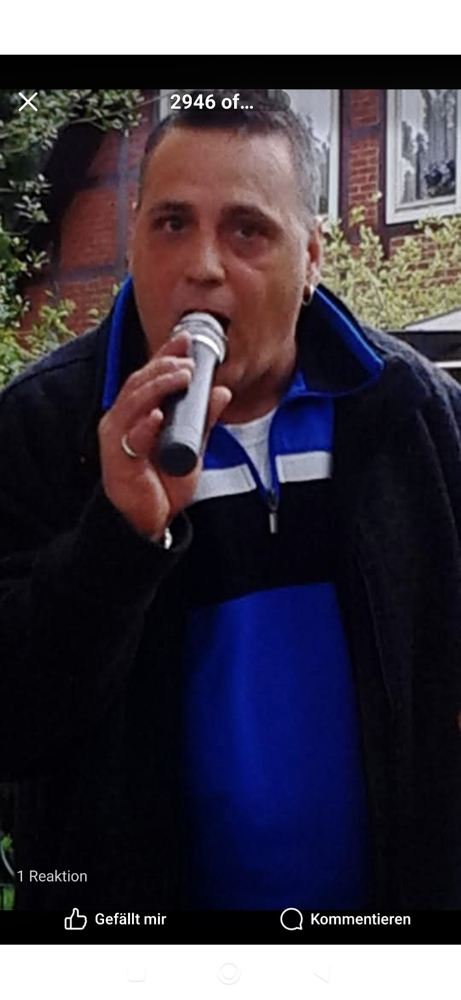
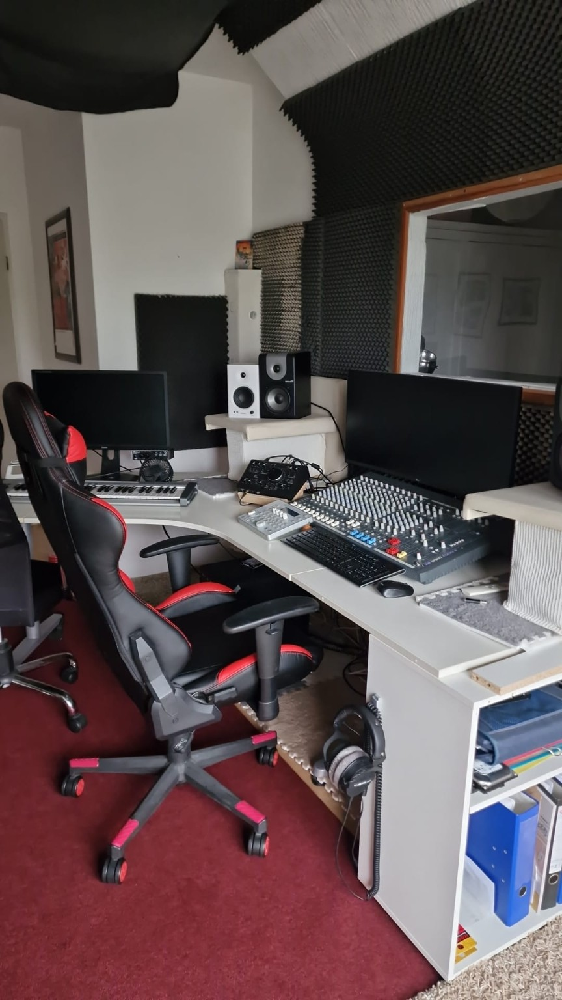

WILLKOMMEN BEI MANDO PROJECT
Wer ich bin. Was ich mache.
Musik begleitet mich seit vielen Jahren: vom DJ-Pult über eigene Veröffentlichungen bis zur Arbeit als Produzent. Hinter Mando Project stehen Songs mit Geschichten, die mich bewegen – über Hoffnung, Menschlichkeit, Verlust und den Mut, weiterzugehen.
Mit dem „Wal H-O-P-E Song“ wurde Mando Project besonders bekannt. Weitere Songs der Hope-Reihe greifen das Schicksal der Wale und den Wunsch nach mehr Mitgefühl auf. Daneben entstehen persönliche Balladen, Pop- und Partytitel.
Unter Mando Studio entwickle und produziere ich eigene Musik und arbeite auch an Produktionen für andere Künstler. Zwei Chartplatzierungen gehören ebenfalls zu meiner musikalischen Geschichte; die genauen Angaben ergänze ich hier, sobald sie geprüft sind.
DER WEG ZUR MUSIK
Meine Geschichte

Von den Anfängen als DJ über Foxhelden 2.0 und die Soloveröffentlichungen als Lukas Mando bis zu Mando Project: Musik begleitet meinen Weg seit vielen Jahren.
Zu den früheren Titeln gehören „Träume werden wahr“, „Verrücktes Leben“, „Lichter der Nacht“ und „Kalt wie Eis“.
„Ich geh meinen Weg“ erzählt von einer Kindheit ohne den nötigen Halt und davon, wie die Musik zur eigenen Stärke wurde. Die Veröffentlichung ist noch geplant.
MEIN KREATIVER RAUM
Mando Studio

Hier entstehen emotionale Songs, Pop-, Disco- und Partymusik – von der ersten Idee bis zur fertigen Produktion. Neben meinen eigenen Titeln arbeite ich auch an Songs für andere Künstler.
Auf der Musikseite findest du Veröffentlichungen von Mando Project und Mando Studio sowie eine Auswahl weiterer Produktionen.
BLEIB IN VERBINDUNG